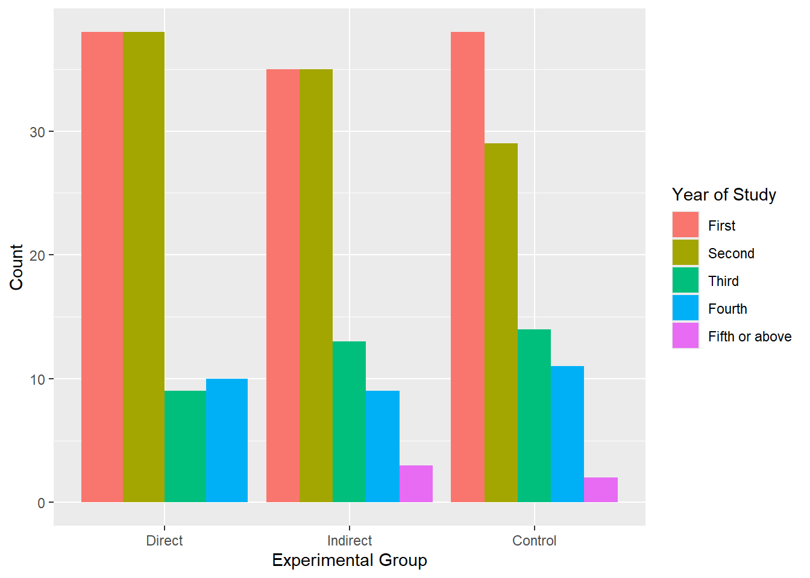
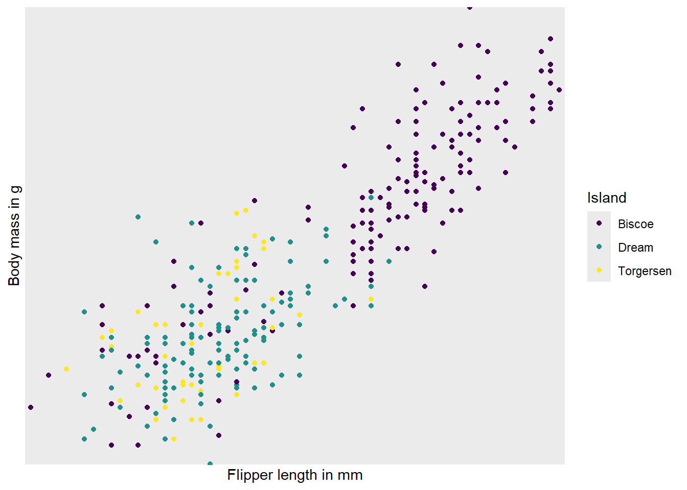

5 Data viz II
Intended Learning Outcomes
By the end of this chapter you should be able to:
- choose an appropriate plot for continuous variables
- choose an appropriate plot for a mix of continuous/categorical variables
- create a basic version of an appropriate plot
- apply extra layers to change the appearance of the plot
In this chapter, we continue our journey of appropriate plots. Last week, we examined which plots are appropriate for categorical variables. Today, we’ll focus on continuous variables and which plots to choose with a mix of continuous and categorical variables.
Individual Walkthrough
5.1 Activity 1: Set-up and data for today
- We are still working with the data by Pownall et al. (2023). Open the project.
- You could use the same
.Rmdfile as last week if you want to keep all plotting in one document or create a new.Rmdto separate plots for categorical and continuous variables. Up to you. - The aggregated data is the same as last week. It should be in your project folder but in case it got lost, download the csv again and place it in your project folder: data_prp_for_ch4.csv.
- If you need a reminder about the data and variables, have a look at the codebook and/or Section 1.4.
5.2 Activity 2: Load in libraries, read in data, and adjust data types
Today, we need to load the package tidyverse, and read in the data data_prp_ch4.csv.
This is the same code as last week. We need to turn our categorical variables into factors to make plotting easier.
data_prp_viz <- data_prp_viz %>%
mutate(Gender = factor(Gender,
levels = c(2, 1, 3),
labels = c("females", "males", "non-binary")),
Secondyeargrade = factor(Secondyeargrade,
levels = c(1, 2, 3, 4, 5),
labels = c("≥ 70% (1st class grade)", "60-69% (2:1 grade)", "50-59% (2:2 grade)", "40-49% (3rd class)", "< 40%")),
Plan_prereg = factor(Plan_prereg,
levels = c(1, 3, 2),
labels = c("Yes", "Unsure", "No")),
Closely_follow = factor(Closely_follow,
levels = c(2, 3),
labels = c("Followed it somewhat", "Followed it exactly")),
Research_exp = factor(Research_exp),
Pre_reg_group = factor(Pre_reg_group))If you are working within the same .Rmd file as last week, you can skip these initial steps but you have to run the code you had already placed at the start of last-week’s .Rmd file to load tidyverse into the library, read in the data, and convert some of the variables into factors.
5.3 Activity 3: Histogram (geom_histogram())
If you want to show the distribution of a continuous variable, you can use a histogram. As with every plot, you need at least 3 layers to create a base version of the plot. Similar to geom_bar(), geom_histogram() only requires an x variable as it does the counting “in the background”.
A histogram divides the data into “bins” (i.e., groupings displayed in a single bar). These bins are plotted along the x-axis, with the y-axis showing the count of observations in each bin. It’s basically a barchart for continuous variables.
Let’s have a look at the age distribution in our dataset.
`stat_bin()` using `bins = 30`. Pick better value with `binwidth`.Warning: Removed 2 rows containing non-finite outside the scale range
(`stat_bin()`).The default number of bins is 30 (as shown in Figure 5.1 above). Changing the number of bins (argument bins) allows for more or less fine-tuning of the data. A higher number of bins results in more detailed granularity.
Perhaps it’s more intuitive to modify the width of each bin using the binwidth argument. For example, binwidth = 1 for the age category would mean each “age group” represents 1 year, while binwidth = 5 would group ages into 5-year spans. The plots below show modifications for both bins and binwidth.
Warning: Removed 2 rows containing non-finite outside the scale range (`stat_bin()`).
Removed 2 rows containing non-finite outside the scale range (`stat_bin()`).The warning message tells us 2 row of data were removed due to containing non-finite values outside the scale range. Have a look at the age column in data_prp_viz to see if you can decipher the warning message.
The rows were removed because .
Colours are manipulated slightly differently than in the barchart. Click through each tab to see how you can modify colours, axis labels, margins, and breaks, and apply a different theme.
We can change the plot colours by adding a fill argument and a colour argument. The fill argument changes the colour of the bars, while the colour argument modifies the outline of the bars. Note that these arguments are added directly to the geom_histogram(), rather than within the overall aes(), as we did with the barchart.
ggplot(data_prp_viz, aes(x = Age)) +
geom_histogram(binwidth = 1, fill = "#586cfd", colour = "#FC58BE")You could use:
Hex codes for
fillandcolour, as we did here:geom_histogram(binwidth = 1, fill = "#586cfd", colour = "#FC58BE"). If you want to create your own colours, check out this website.Pre-defined colour names:
geom_histogram(binwidth = 1, fill = "purple", colour = "green"). See the full list here.
Here we removed the label for the y axes Count (to show you some variety) and modified the breaks. The y-axis is now displayed in increasing steps of 5 (rather than 10), and the x-axis has 1-year increments instead of 5.
Notice how the breaks = argument changes the labels of the break ticks but not the scale limits. You can adjust the limits of the scale using the limits = argument. To exaggerate, we set the limits to 15 and 50. See how the values from 15 to 19, and 44 to 50 do not have labels? You would need to adjust that using the breaks = argument.
The expansion() function removes the gap between the x-axis and the bars. It is exactly the same code we used in Chapter 4.
ggplot(data_prp_viz, aes(x = Age)) +
geom_histogram(binwidth = 1, fill = "#586cfd", colour = "#FC58BE") +
labs(x = "Age (in years)", # renaming x axis label
y = "") + # removing the y axis label
scale_y_continuous(
# remove the space below the bars (first number), but keep a tiny bit (5%) above (second number)
expand = expansion(mult = c(0, 0.05)),
# changing break points on y axis
breaks = seq(from = 0, to = 30, by = 5)
) +
scale_x_continuous(
# changing break points on x axis
breaks = seq(from = 20, to = 43, by = 1),
# Experimenting with
limits = c(15, 50)
)Let’s experiment with the themes. For this plot we have chosen theme_bw()
ggplot(data_prp_viz, aes(x = Age)) +
geom_histogram(binwidth = 1, fill = "#586cfd", colour = "#FC58BE") +
labs(x = "Age (in years)", # renaming x axis label
y = "") + # removing the y axis label
scale_y_continuous(
# remove the space below the bars (first number), but keep a tiny bit (5%) above (second number)
expand = expansion(mult = c(0, 0.05)),
# changing break points on y axis
breaks = seq(from = 0, to = 30, by = 5)
) +
scale_x_continuous(
# changing break points on x axis
breaks = seq(from = 19, to = 44, by = 1)
) +
# pick a theme
theme_bw()
5.4 Activity 4: Scatterplot (geom_point())
Scatterplots are appropriate when you want to plot two continuous variables. Here, we want to display the relationship between Acceptance of QRPs at Time point 1 and Time point 2. The default scatterplot can be created with geom_point().
We can also add a trendline by using geom_smooth(). The default trendline is loess. If you want a linear trendline, you would need to add method = "lm" inside the geom_smooth() function.
Customising the colour of a scatterplot is slightly different from the other plots we’ve encountered so far. Technically, the point is not a “filled-in black area” but rather an extremely wide outline of a circle. Therefore, we cannot use the usual fill argument and instead need to use the colour argument, similar to how we customised the outline of the histogram.
See the tabs below to learn how to change the colour for all points or how to adjust the colour based on groupings.
If we want to change the colour of all the points, we can add the colour argument to the geom_point() function. Likewise, to change the colour of the trendline, we would also use the colour argument. Here, we used pre-defined colour names, but HEX codes would work just as well.
If we want the points to change colour based on another grouping variable, the colour argument should go inside the aes(). If you don’t want to define the colours manually, you can use a colour palette like Brewer (scale_colour_brewer()) or Viridis (scale_colour_viridis_d()).
## adding grouping variable Pre_reg_group and changing the colour values manually
ggplot(data_prp_viz, aes(x = QRPs_Acceptance_Time1_mean, y = QRPs_Acceptance_Time2_mean, colour = Pre_reg_group)) +
geom_point() +
geom_smooth(method = lm) +
scale_colour_manual(values = c('mediumvioletred', 'steelblue1'))You can tidy the legend title and group labels using the scale_colour_? function, depending on the palette you’re using (e.g., scale_colour_manual(), scale_colour_brewer and many more).
5.5 Activity 5: Boxplot (geom_boxplot())
A boxplot is one of the options to display a continuous variable with categorical grouping variable. Here, we want to create a boxplot to explore whether students’ understanding of open science varies based on whether or not they have research experience. Our default boxplot would look like this:
# default boxplot
ggplot(data_prp_viz, aes(x = Research_exp, y = Time1_Understanding_OS)) +
geom_boxplot()Tada! As usual, we can enhance the plot by adding various layers. Click on each tab below to see how.
We can change the colour by adding a fill argument inside the aes(). To customise the colours further, we can add a scale_fill_? layer. If you have specific colours in mind, use scale_fill_manual(). If you prefer pre-defined palettes, such as Brewer, you can use scale_fill_brewer().
Btw, this is exactly the same code we used for the barcharts.
We need to relabel the axes. The function to use depends on the variable type. Here, we need scale_x_discrete() for the x-axis and scale_y_continuous() for the y-axis. We can also tidy up the group labels and adjust the breaks on the y-axis (e.g., in steps of 1 instead of 2) within these same functions.
ggplot(data_prp_viz, aes(x = Research_exp, y = Time1_Understanding_OS, fill = Research_exp)) +
geom_boxplot() +
scale_fill_brewer(palette = "Dark2") +
scale_x_discrete(
# changing the label of x
name = "Research Experience",
# changing the group labels of the 2 groups
labels = c("Yes", "No")) +
scale_y_continuous(
# changing name of the y axis
name = "Confidence in Understanding Open Science (Time 1)",
# changing break labels
breaks = c(seq(from = 1, to = 7, by = 1))
)The legend is superfluous; best to take it off. As before, we can remove the legend by adding the argument guide = "none" to the scale_fill_? function.
Let’s pick a theme we haven’t used yet: theme_dark().
ggplot(data_prp_viz, aes(x = Research_exp, y = Time1_Understanding_OS, fill = Research_exp)) +
geom_boxplot() +
scale_fill_brewer(palette = "Dark2",
# removing the legend
guide = "none") +
scale_x_discrete(
name = "Research Experience",
labels = c("Yes", "No")) +
scale_y_continuous(
name = "Confidence in Understanding Open Science (Time 1)",
breaks = c(seq(from = 1, to = 7, by = 1))
) +
# pick a theme
theme_dark()
5.6 Activity 6: Violin plot (geom_violin())
An alternative way to display a continuous variable with a categorical grouping variable is a violin plot. Here, we want to create a violin plot to explore whether the perception of supervisor support depends on whether students plan to pre-register their dissertation. Our default violin plot would look like this:
5.7 Activity 7: Violin-boxplots
So far, we’ve only added one geom_? layer to our plots. However, thanks to ggplot’s layered system, we can add multiple geoms, for example, when creating a violin-boxplot.
Remember, the order of the layers can sometimes make a difference. We’ve seen this already - adding a theme at the end can override earlier arguments like the legend position. Similarly, ggplot + violinplot + boxplot will look different from ggplot + boxplot + violinplot.
Let’s use the example of QRPs at timepoint 2 and a grouping variable of Second-year Grade.
See the tabs below to learn how to customise various elements, such as the width of the boxes, and the colour or opacity.
If we want to get any information from the boxplot, we need to place it “on top of” the violin plot. But still, the boxplot is pretty wide and covers important details from the violin plot. To make the information more visible, we can adjust the width of the boxes. Finding an appropriate width might take some trial and error.
Adding colour should be pretty straightforward by now. The code is no different from what we used for the boxplot or violin plot. We need to add the fill argument within the aes(), along with a scale_fill_? layer.
However, we can further customise the plot by adding an opacity argument using alpha to the violin plot geom.
ggplot(data_prp_viz, aes(x = Secondyeargrade, y = QRPs_Acceptance_Time2_mean, fill = Secondyeargrade)) +
geom_violin(alpha = 0.4) + # alpha for opacity
geom_boxplot(width = 0.2) + # change width of the boxes
scale_fill_brewer(palette = "RdPu") # customise colour5.8 Activity 8: Faceting - adding another grouping variable
Faceting is really useful when you have subsets in the data. We will apply it to the violin-boxplot from above, but you could add this layer to pretty much any plot. The function to split the plots into facets is called facet_wrap().
Let’s add another grouping variable, Pre_reg_group, to create separate plots for the yes and no groups.
Since the group labels on the x-axis are quite long, we will need to adjust them for better readability. Adding guide = guide_axis(n.dodge = 2) to the scale_x_discrete() function helps to display labels across multiple rows.
ggplot(data_prp_viz, aes(x = Secondyeargrade, y = QRPs_Acceptance_Time2_mean, fill = Secondyeargrade)) +
geom_violin(alpha = 0.5) +
geom_boxplot(width = 0.2) +
scale_fill_brewer(palette = "RdPu",
guide = "none") +
labs (x = "Second-year Grade", y = "Acceptance of Questionable Research Practices (Time 2)") +
theme_classic() +
facet_wrap(~Pre_reg_group) + # faceting to split into subplots for yes and no
scale_x_discrete(guide = guide_axis(n.dodge = 2)) # want display labels in 2 rowsYou may have noticed that the labels of Pre_reg_group are displayed as numbers (1 and 2). If this bugs you, fix the labels in the data object. This would be less hassle than trying to adjust the facet headings in the plot.
Pair-coding
Task 1: Open the R project for the lab
Task 2: Create a new .Rmd file
… and name it something useful. If you need help, have a look at Section 1.3.
Task 3: Load in the library and read in the data
The data should already be in your project folder. If you want a fresh copy, you can download the data again here: data_pair_coding.
We are using the package tidyverse today, and the data file we need to read in is dog_data_clean_wide.csv. I’ve named my data object dog_data_wide to shorten the name but feel free to use whatever object name sounds intuitive to you.
Task 4: Re-create one of the 3 plots below
Re-create one of the 3 plot below:
- grouped barchart (easy)
- violin-boxplot (medium)
- scatterplot (hard)
Difficulty level: easy

Difficulty level: medium

Difficulty level: hard

If you are extremely fast, challenge yourself and re-create one of the other plots.
Test your knowledge
Knowledge check
Question 1
Why would this line of code not create a barplot, assuming you already loaded all data and libraries and you spelt the data and column names correctly?
Question 2
If I wanted precisely 5 bars in my histogram, what argument would I use?
Question 3
You want to create a scatterplot to show the correlation between two continuous variables, which geom would you use?
Question 4
True or False? To showcase different groups in a scatterplot, you could specify a grouping variable using the fill argument to change the colour of the points.
Error mode
Some of the code chunks contain mistakes and result in errors, while others do not produce the expected results. Your task is to identify any issues, explain why they occurred, and, if possible, fix them.
Let’s go back to the Palmer penguins for this part.
Attaching package: 'palmerpenguins'The following objects are masked from 'package:datasets':
penguins, penguins_rawQuestion 5
We want to plot the number of penguins across the different islands.
Error in `geom_bar()`:
! `mapping` must be created by `aes()`.
ℹ Did you use `%>%` or `|>` instead of `+`?The error message is incredibly useful. So that should be an easy fix!

Question 6
We want to create a violin-boxplot showing the bill length across species, separately for male and female penguins.
penguins_no_na <- penguins %>%
drop_na(island, flipper_length_mm, sex)
ggplot(penguins_no_na, aes(x = island, y = flipper_length_mm, fill = sex)) +
geom_violin() +
geom_boxplot(width = 0.2) +
labs(x = "Island", y = "Bill length in mm") +
facet_wrap(~sex)We got a plot, but is it the one we aimed for?
Question 7
This time, we want to show the relationship between flipper length and body mass of the penguins. The following code runs, but the x- and y-axes are misbehaving somehow. Not what we wanted. Any idea why?
ggplot(penguins, aes(x = flipper_length_mm, y = body_mass_g, colour = island)) +
geom_point() +
scale_colour_viridis_d(name = "Island") +
scale_y_discrete(name = "Body mass in g",
breaks = seq(2500, 6500, 500),
limits = c(2500, 6500)) +
scale_x_discrete(name = "Flipper length in mm")Warning in scale_y_discrete(name = "Body mass in g", breaks = seq(2500, : Continuous limits supplied to discrete scale.
ℹ Did you mean `limits = factor(...)` or `scale_*_continuous()`?Warning: Removed 2 rows containing missing values or values outside the scale range
(`geom_point()`).